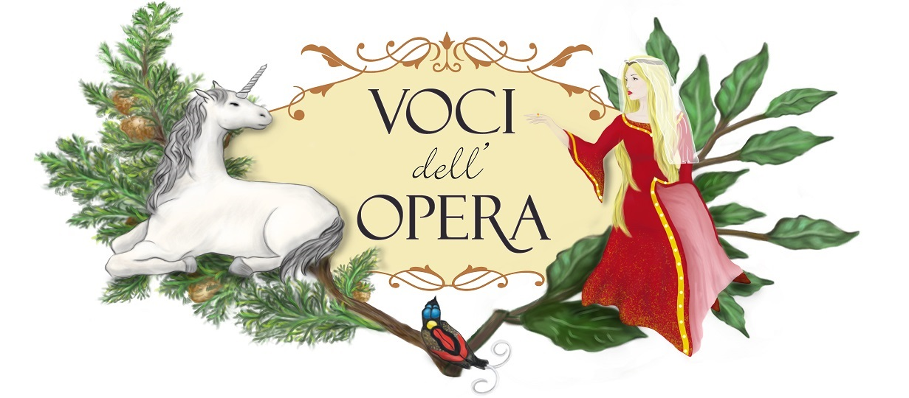
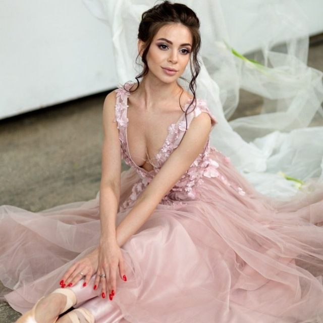

Уютный вечер для небольшой аудитории — без сцены, на расстоянии вытянутой руки. Только живой разговор, искренние истории и возможность задать вопросы прима-балерине лично.
Поговорим о том, как изменилась жизнь Кати после рождения ребёнка, о возвращении в театр после декретного отпуска, о майской премьере «Тщетной предосторожности» и творческих планах артистки.